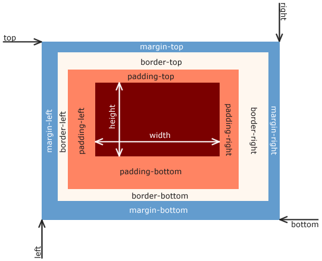

The Box Model
The Box Model is a CSS layout mechanism that the web browser uses to render content organized by box-shaped elements. Each element is made of four specific areas.
Browsers load HTML elements with default position values. All elements on a web page are interpreted by the browser as “living” inside of a box. This is what is meant by the box model.
Height & Width
- An element’s content has two dimensions: a height and a width.
- By default, the dimensions of an HTML box are set to hold the raw contents of the box.
- The CSS height and width properties can be used to modify these default dimensions.
- When the width and height of an element are set in pixels, it will be the same size on all devices — an element that fills a laptop screen will overflow a mobile screen.
Box Sizing
allows us to include the padding and boarder in the calculation of an element’s height and width
Has 2 values:
border-box: Any assigned padding or border is included in the calculation of an elements height or width.
content-box: Default CSS behavior, the assigned height or width of an element plus any padding will be the total height or weight.
Content:
- Content Area:
- This area contains the actual content of an element, including text and images. It also sometimes has a background-color or background-image
- width and height: The width and height of the content area.
- Can be set in px or %.
Padding:
- Padding Area:
- This area is located between the content and border areas. It can be changed on the top, right, bottom and left sides.
- The amount of space between the content area and the border.
- Padding is like the space between a picture and the frame surrounding it.
The space between the contents of a box and the borders of a box is known as padding. Padding is like the space between a picture and the frame surrounding it.
The padding property is often used to expand the background color and make the content look less cramped.
In CSS, you can modify this space with the padding property.
Padding Shorthand:
- 4 values: top, right, bottom, left.
- 3 values: top, left & right when equal, bottom.
- 2 values: top & bottom, left & right.
Border:
- Border Area:
- This area is located between the margin and padding areas. Their thickness and style can be changed.
- Surrounds the content and padding areas.
- Properties can be set within one line of code or multiple.
A border is a line that surrounds an element, like a frame around a painting. Borders can be set with a specific width, style, and color.
The default border is medium none color, where color is the current color of the element. If width, style, or color are not set in the CSS file, the web browser assigns the default value for that property.
Border Radius
You can modify the corners of an element’s border box with the border-radius property.
You can create a border that is a perfect circle by first creating an element with the same width and height, and then setting the radius equal to half the width of the box, which is 50%.
Margin:
- Margin Area:
- This is the outermost area in the Box Model. It borders with the margin areas of neighboring elements
- It can be changed on the top, right, bottom and left sides.
- The amount of space between the border and the outside edge of the element.
Margin refers to the space directly outside of the box. The margin property is used to specify the size of this space.
This means that other HTML elements on the page cannot come within however many pixels of the paragraphs border as set by the margin
Margin Shorthand:
- 4 values: top, right, bottom, left.
- 3 values: top, left & right when equal, bottom.
- 2 values: top & bottom, left & right.
Auto/Centering
The margin property also lets you center content. However, you must follow a few syntax requirements. In order to center an element, a width must be set for that element. It’s not possible to center an element that takes up the full width of the page, since the width of the page can change due to display and/or browser window size.
margin: 0 auto; will center the divs in their containing elements. The 0 sets the top and bottom margins to 0 pixels. The auto value instructs the browser to adjust the left and right margins until the element is centered within its containing element.
Margin Collapse
- Horizantal(right & left):add the sum of margins
- Vertical(top & bottom):Larger margin sets/determines distance.
As you have seen, padding is space added inside an element’s border, while margin is space added outside an element’s border. One additional difference is that top and bottom margins,also called vertical margins, collapse, while top and bottom padding does not.
Horizontal margins (left and right), like padding, are always displayed and added together. For example, if two divs with ids #div-one and #div-two, are next to each other, they will be as far apart as the sum of their adjacent margins.
Unlike horizontal margins, vertical margins do not add. Instead, the larger of the two vertical margins sets the distance between adjacent elements.